Manual de uso Helptoner Pedidos
Passo a passo de todas as telas, do primeiro acesso aos relatórios
Para o Administrador do sistema
Versão de outubro de 2026
Sumário
- 1Antes de começar4
- 2Primeiro acesso (uma vez só)7
- 3Entrar no dia a dia14
- 4A tela Início18
- 5Fazer um pedido20
- 6Pedidos: procurar, ver, repetir e cancelar34
- 7Clientes41
- 8Produtos47
- 9Estoque52
- 10Relatórios58
- 11Funcionários68
- 12Histórico de alterações76
- 13Minha conta78
- 14Usar no celular82
- 15Deu problema, e agora?85
- 16Contatos91
Como ler este manual
- Cada tarefa vem em passos numerados. Faça um passo de cada vez, na ordem.
- Os nomes de botões e campos aparecem em negrito, escritos igual à tela.
- Nas fotos, o que você deve olhar ou clicar está dentro de um contorno vermelho. Quando há várias coisas, cada uma tem um número, como 1 2 3, e o texto explica cada número.
- As caixas Atenção mostram onde é fácil errar. As caixas Dica mostram atalhos e conselhos.
As fotos deste manual usam dados de exemplo. No seu sistema aparecem os seus clientes, produtos e o seu nome. Nas fotos, o Administrador se chama Roberto Almeida e a vendedora, Juliana Martins.
A manutenção técnica do sistema (atualizações, cópias de segurança e o endereço na internet) é com o Lucas. Você só precisa usar as telas descritas aqui.
CAPÍTULO 1Antes de começar
O Helptoner Pedidos funciona no navegador de internet (Google Chrome, Microsoft Edge ou outro). Não é preciso instalar nada no computador. Para entrar pela primeira vez, separe estas quatro coisas:
| O que | Onde conseguir |
|---|---|
| O endereço do sistema | O endereço que o Lucas passar, por exemplo https://helptoner-pedidos.vercel.app. Escreva aqui o endereço certo: |
| Seu e-mail e a senha temporária | O Lucas cadastra você e passa uma senha temporária. Ela só serve para a primeira entrada: logo depois você cria a sua. |
| Um celular com aplicativo autenticador | Google Authenticator ou Microsoft Authenticator. Veja abaixo como instalar. |
| Papel e caneta | Para anotar os códigos de recuperação (explicados no capítulo 2). |
Com o sistema aberto no navegador, aperte Ctrl + D e clique em Concluído. Nas próximas vezes, é só clicar na estrela dos favoritos.
O que é o aplicativo autenticador
É um aplicativo gratuito do celular que mostra um número de 6 dígitos que muda a cada 30 segundos. Ao entrar no sistema, além da senha, você digita esse número. Assim, mesmo que alguém descubra a sua senha, não consegue entrar sem o seu celular. O sistema chama isso de verificação em duas etapas (às vezes aparece só 2FA).
Instalar o aplicativo no celular
Celular Android (Samsung, Motorola, Xiaomi e outros)
- Abra a Play Store (o ícone de triângulo colorido).
- Toque na busca, escreva Google Authenticator e toque no aplicativo do Google LLC.
- Toque em Instalar. Quando terminar, toque em Abrir e, se ele pedir, em Começar. Não é preciso entrar com conta nenhuma: se perguntar, pode tocar em Usar sem uma conta.
iPhone
- Abra a App Store (o ícone azul com um “A”).
- Toque em Buscar, escreva Google Authenticator e toque no aplicativo do Google LLC.
- Toque em Obter e confirme com o Face ID ou a senha da Apple. Depois toque em Abrir.
O Microsoft Authenticator também serve e funciona do mesmo jeito. Use só um deles.
Os números do aplicativo dependem do horário. Deixe o celular com data e hora automáticas (em Configurações → Data e hora). Com o relógio errado, o sistema recusa o código.
Abrir o sistema
Digite o endereço na barra do navegador e aperte Enter. Aparece a tela Entrar:
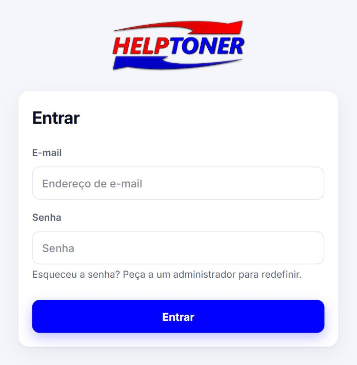
CAPÍTULO 2Primeiro acesso (uma vez só)
Na primeira vez, o sistema pede três coisas, nesta ordem: trocar a senha, ligar o aplicativo do celular e guardar os códigos de recuperação. Leva uns 10 minutos. Faça com calma, com o celular na mão. Só depois disso o sistema libera as outras telas.
2.1 Entrar com a senha temporária
- No campo E-mail 1, digite o seu e-mail.
- No campo Senha 2, digite a senha temporária que o Lucas passou, exatamente como está. Ela tem 16 letras minúsculas e números em quatro grupos separados por tracinhos (no formato w3gb-2jrz-mvd3-vtce); digite os tracinhos também.
- Clique em Entrar 3.
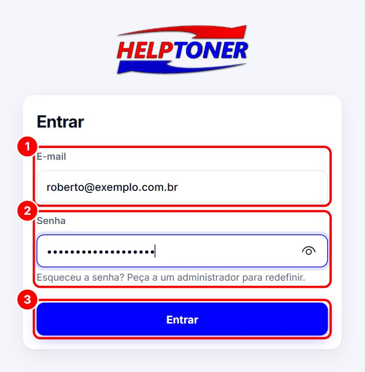
2.2 Criar a sua senha
Aparece a tela Primeiro acesso. No alto, 1 mostra em que etapa você está: 1 · Nova senha, 2 · Autenticador e 3 · Códigos de recuperação.
- Em Nova senha 2, digite a senha que você quer usar daqui para a frente.
- Em Confirme a nova senha 3, digite a mesma senha de novo.
- Clique em Salvar e continuar 4.
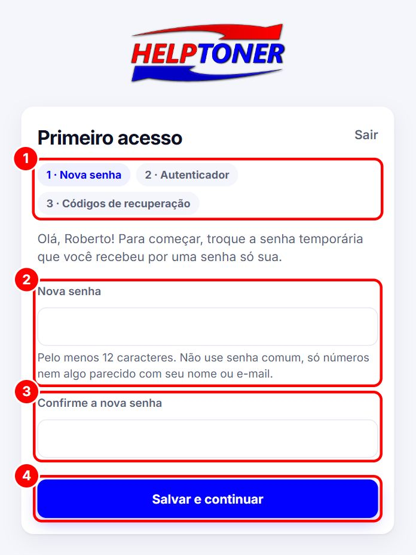
A senha precisa ter pelo menos 12 caracteres, não pode ser uma senha comum (como “12345678” ou “senha123”), não pode ser só números, não pode parecer com o seu nome ou e-mail e precisa ser diferente da temporária.
Um jeito fácil: junte três ou quatro palavras que só você ligaria, com tracinhos e um número. Por exemplo, no estilo Goiaba-Varanda-Trator-58. Não use este exemplo: invente a sua.
Se a senha não servir, o sistema explica o motivo em vermelho, embaixo do campo, e nada é gravado. Corrija e clique de novo em Salvar e continuar.
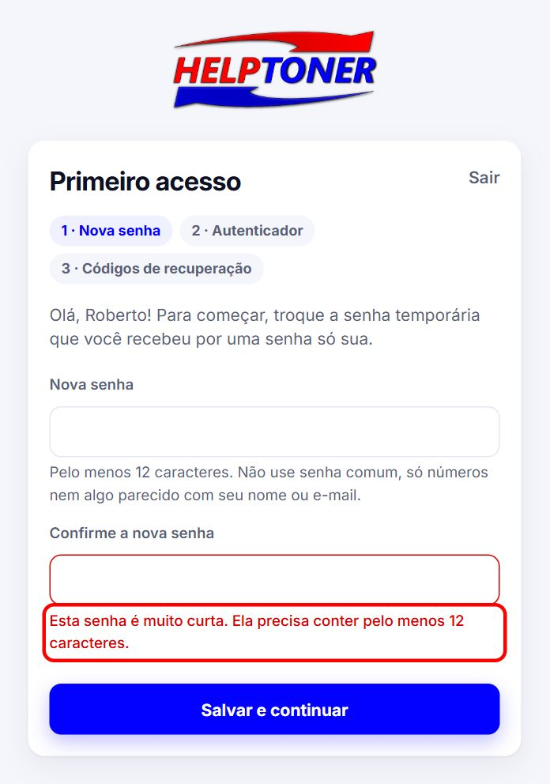
Se precisar anotar, guarde num lugar só seu. Nunca passe a sua senha para ninguém, nem para o Lucas: se for preciso, ele cria uma senha nova para você.
2.3 Ligar o aplicativo do celular
Na etapa 2 · Autenticador, o sistema mostra um quadrado de pontinhos pretos, o QR code 1. O celular vai “fotografar” esse quadrado.
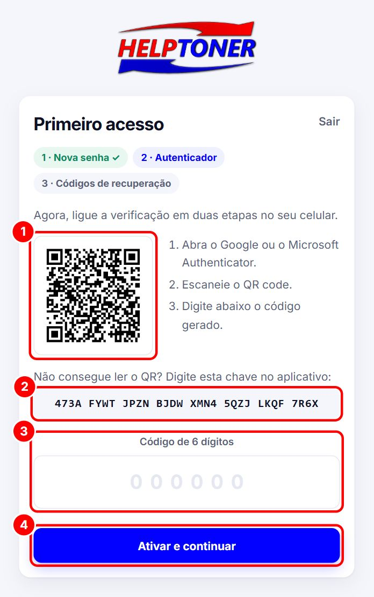
- No celular, abra o Google Authenticator.
- Toque no botão + (no canto de baixo) e depois em Ler código QR (ou Escanear um código QR). Se ele pedir permissão para usar a câmera, toque em Permitir.
- Aponte a câmera do celular para o QR code da tela do computador 1, até ele ler sozinho.
- No celular aparece Helptoner Pedidos com um número de 6 dígitos.
- No computador, digite esse número no campo Código de 6 dígitos 3. Pode digitar os números juntos, sem espaço.
- Clique em Ativar e continuar 4.
No celular, ao lado do número, há um pequeno relógio que vai se esvaziando. Se estiver quase no fim, espere o próximo número aparecer e digite o novo. Um número que já passou não vale mais.
No celular, toque em + e escolha Inserir chave de configuração. Em Conta (ou Nome), escreva Helptoner. Em Chave, digite as letras e números que aparecem na tela embaixo de “Não consegue ler o QR? Digite esta chave no aplicativo” 2. Se o aplicativo perguntar o tipo, deixe o que é baseado no horário e toque em Adicionar. (Os nomes das opções podem variar um pouco de um celular para outro.)
2.4 Guardar os códigos de recuperação
Na etapa 3 · Códigos de recuperação, o sistema mostra 10 códigos de 8 números 1. Eles são a “chave reserva” da sua conta: se um dia você perder o celular ou ele quebrar, você entra com um desses códigos no lugar do número do aplicativo. Cada código vale uma vez só.
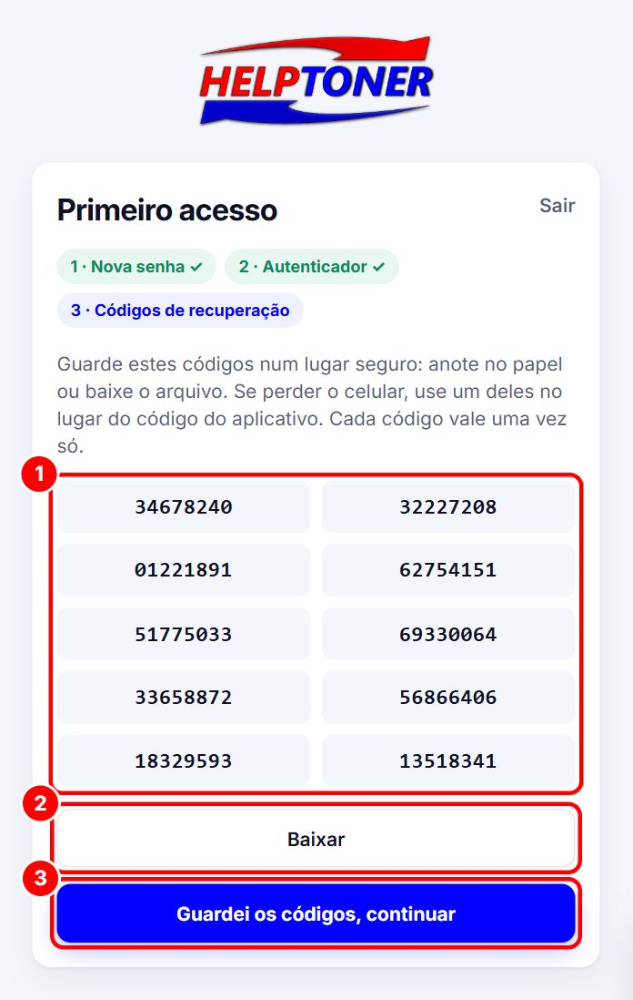
- Anote os 10 códigos no papel, com calma, conferindo número por número.
- Se quiser, clique também em Baixar 2 para salvar os códigos num arquivo no computador.
- Guarde o papel num lugar seguro, longe do celular (por exemplo, numa gaveta em casa).
- Clique em Guardei os códigos, continuar 3.
Não guarde o papel na capinha do celular nem na carteira junto com ele: se perder um, perde o outro. Não mande os códigos por WhatsApp nem por e-mail. Se acabar perdendo os códigos, dá para gerar novos em Minha conta (capítulo 13).
Pronto! O sistema mostra o aviso “Tudo pronto! Seu acesso está configurado.” e abre a tela Início. Você não vai precisar repetir este capítulo.
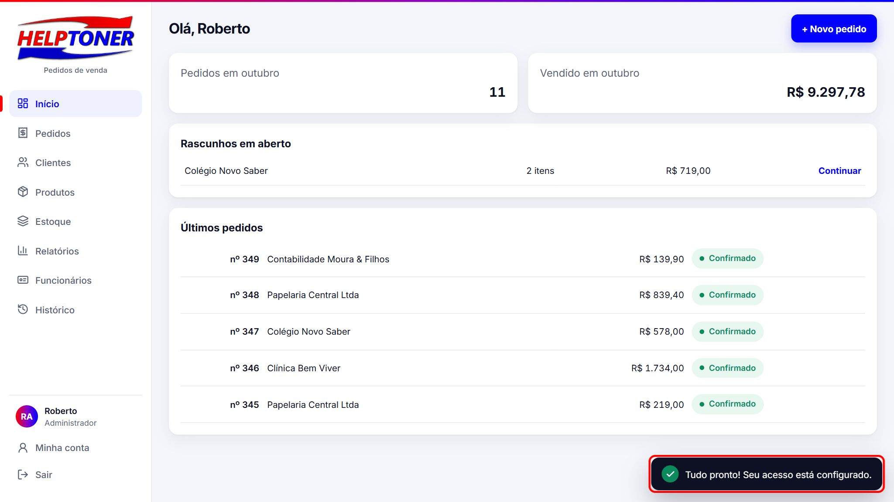
CAPÍTULO 3Entrar no dia a dia
Depois do primeiro acesso, entrar é sempre igual: e-mail e senha, depois o número do aplicativo do celular.
3.1 E-mail, senha e o código do celular
- Abra o endereço do sistema. Aparece a tela Entrar.
- Digite o seu E-mail e a sua Senha e clique em Entrar.
- Aparece a tela Verificação em duas etapas. Abra o aplicativo no celular e veja o número de Helptoner Pedidos.
- Digite o número no campo Código 1 e clique em Verificar 2. Embaixo do campo, o sistema lembra o que vale ali: “Os 6 números do aplicativo ou um código de recuperação.”
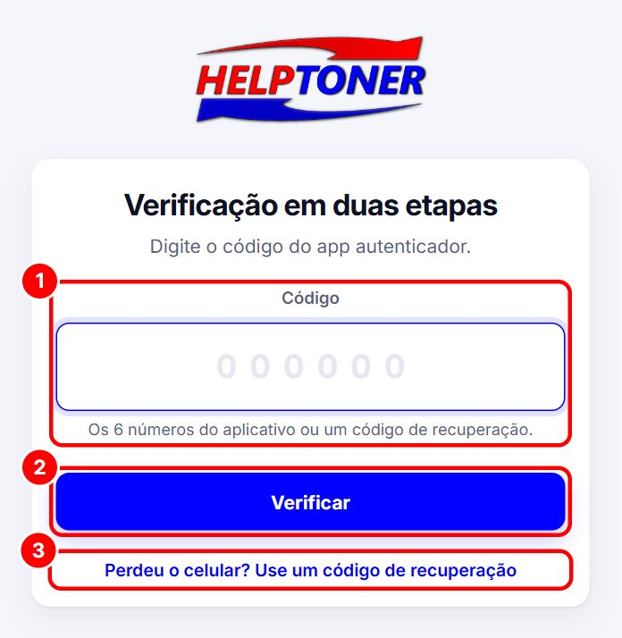
3.2 “Confiar neste computador?”
Logo depois do código, o sistema pergunta se pode confiar neste computador.
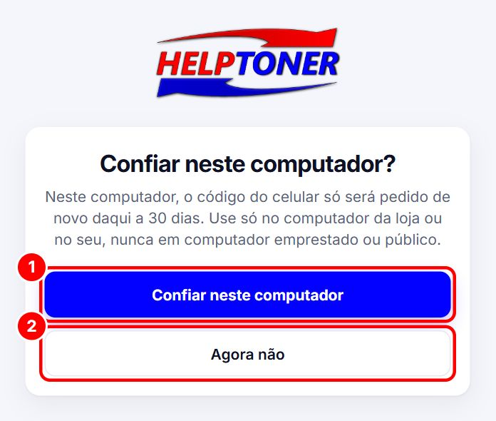
- 1 Confiar neste computador: escolha no computador da loja ou no seu computador de casa. Nos próximos 30 dias, nesse computador, você entra só com e-mail e senha, sem o código do celular. Depois de 30 dias, o sistema pede o código uma vez e pergunta de novo.
- 2 Agora não: escolha em computador emprestado, de outra pessoa ou público (lan house, hotel, banco). O código vai ser pedido em toda entrada.
A confiança é de cada pessoa: se você e o Lucas confiarem no computador da loja, cada um entra ali só com o próprio e-mail e senha. Por isso, nunca deixe a sua senha anotada perto desse computador.
Mesmo num computador de confiança, o código volta a ser pedido se a sua senha mudar (você trocou ou alguém redefiniu) ou se a verificação em duas etapas for zerada. É de propósito, para a sua segurança.
3.3 Sem o celular: usar um código de recuperação
Se o celular ficou em casa, quebrou ou sumiu, use um dos códigos de recuperação que você anotou no papel.
- Entre com e-mail e senha, como sempre.
- Na tela Verificação em duas etapas, se quiser ler a explicação, clique em Perdeu o celular? Use um código de recuperação 1.
- Digite um dos códigos de 8 números no campo Código 2 e clique em Verificar.
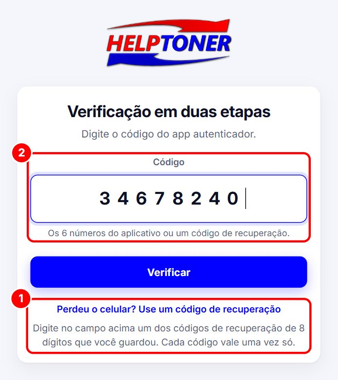
- Risque no papel o código que você usou: ele não vale de novo.
Depois de entrar, avise o Lucas (ou o outro administrador) no mesmo dia. Ele vai usar Zerar 2FA e Redefinir senha na sua conta, e você configura o aplicativo no celular novo. Veja o capítulo 11.
3.4 Sair do sistema
No fim do dia, ou quando for deixar o computador, clique em Sair 1, no canto de baixo do menu, à esquerda.
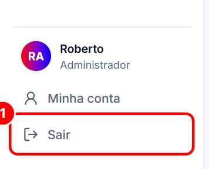
3.5 Ficou parado muito tempo?
Por segurança, o sistema sai sozinho depois de 2 horas sem uso. Quando você voltar a mexer, aparece a tela Entrar. Entre de novo: o sistema volta para a tela em que você estava.
Os pedidos em montagem (rascunhos) são salvos a cada mudança. Se o sistema sair no meio de um pedido, depois de entrar é só abrir o rascunho de novo (veja o capítulo 5).
CAPÍTULO 4A tela Início
É a primeira tela depois de entrar. Ela mostra um resumo do dia a dia e dá acesso a todo o resto pelo menu.
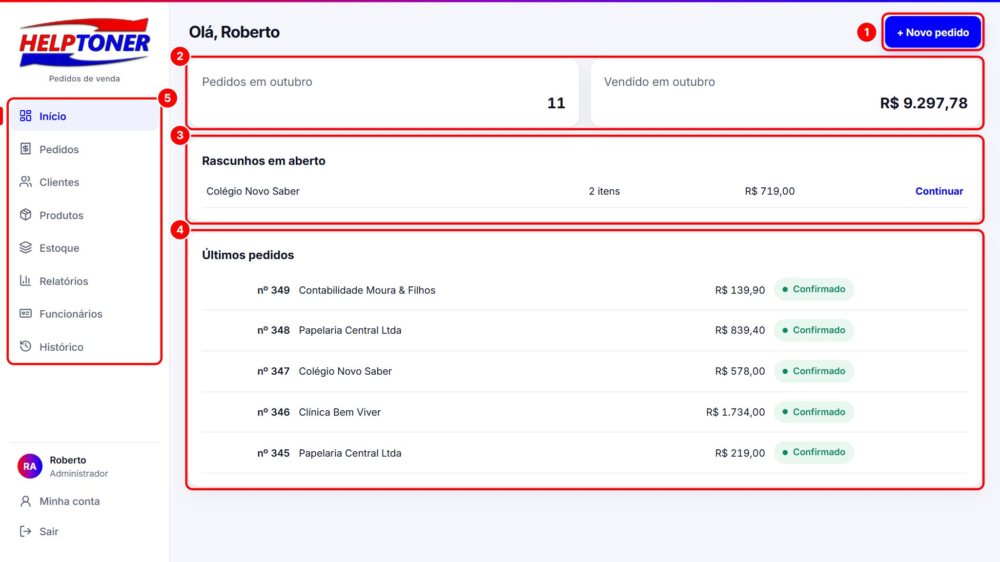
- 1 + Novo pedido: começa um pedido novo (capítulo 5).
- 2 Números do mês: quantos pedidos foram confirmados no mês e quanto foi vendido. Para o Administrador, são os números da empresa toda; o vendedor vê só os pedidos dele.
- 3 Rascunhos em aberto: os pedidos que você começou e ainda não confirmou. Clique em Continuar para terminar um deles.
- 4 Últimos pedidos: os 5 pedidos mais recentes da empresa. Clique no número (por exemplo, nº 349) para abrir o pedido.
- 5 Menu: leva às outras telas. Relatórios, Funcionários e Histórico só aparecem para o Administrador.
Embaixo do menu ficam o seu nome, o seu perfil (Administrador), Minha conta e Sair. A tela em que você está fica destacada em azul no menu.
Depois de salvar ou confirmar alguma coisa, aparece um aviso escuro no canto de baixo, à direita (por exemplo, “Cliente salvo.”). Ele some sozinho depois de alguns segundos. Aviso com X vermelho indica que algo não deu certo.
CAPÍTULO 5Fazer um pedido
Este é o coração do sistema. O pedido é montado aos poucos e fica guardado como rascunho enquanto você mexe. Ele só ganha número, baixa o estoque e vale de verdade quando você clica em Confirmar pedido.
5.1 Começar um pedido novo
- Na tela Início (ou na tela Pedidos), clique em + Novo pedido.
- Abre a tela Novo pedido, dividida em partes:
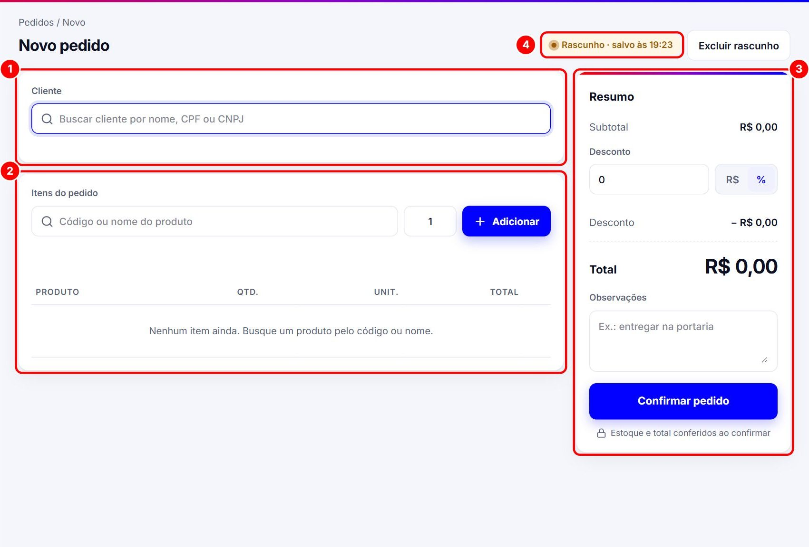
- 1 Cliente: para quem é o pedido.
- 2 Itens do pedido: os produtos e as quantidades.
- 3 Resumo: subtotal, desconto, total, observações e o botão de confirmar.
- 4 O selo Rascunho · salvo às 14:36 mostra que tudo está sendo salvo sozinho. Não existe botão de salvar.
5.2 Escolher o cliente
- Clique no campo Buscar cliente por nome, CPF ou CNPJ 1.
- Digite uma parte do nome (por exemplo, papel), ou do CPF, ou do CNPJ. Em menos de um segundo aparece a lista de clientes encontrados 2, com o pedaço digitado marcado em amarelo.
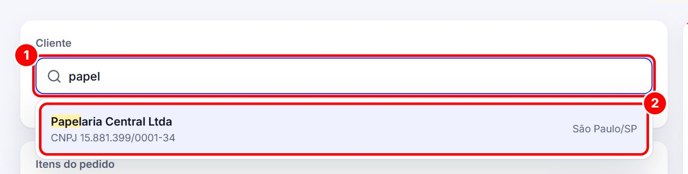
- Escolha o cliente de um destes jeitos:
- com o mouse: clique no nome dele na lista; ou
- com o teclado: o primeiro da lista já vem marcado; use as setas ↓ e ↑ para ir até o certo e aperte Enter.
- O cliente escolhido aparece num cartão 1, com o CPF ou CNPJ e a cidade. Confira se é o cliente certo. Se não for, clique em Trocar 2 e busque de novo.
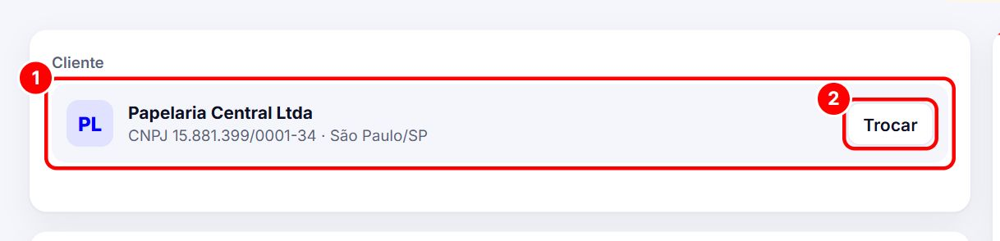
Ele pode não estar cadastrado ou estar inativo. Cadastre (ou reative) em Clientes (capítulo 7). O rascunho fica salvo: depois é só voltar a ele pela tela Início, em Rascunhos em aberto.
5.3 Adicionar produtos
- Clique no campo Buscar produto por código ou nome 1 e digite parte do código ou do nome (por exemplo, 85a ou brother).
- Na lista 2, cada produto mostra o preço e quantos estão disponíveis no estoque. Produtos Sem estoque aparecem apagados e não podem ser escolhidos.
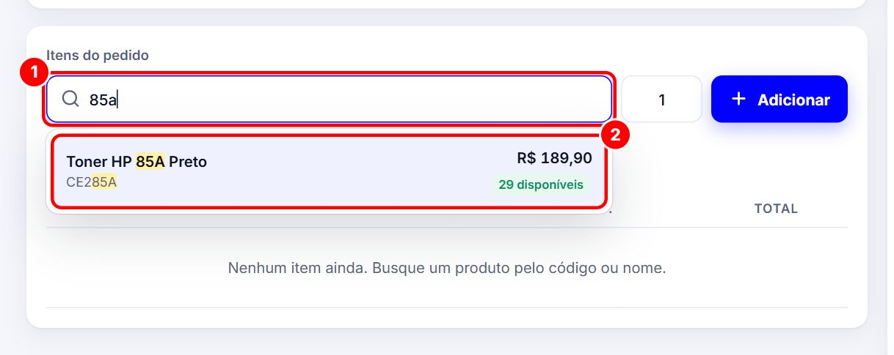
- Escolha o produto com o mouse ou com as setas e Enter, como no cliente.
- Embaixo do campo aparece o preço e o estoque 1 (por exemplo, “R$ 189,90 cada · 32 em estoque”). O cursor pula sozinho para a quantidade 2: digite quantas unidades o cliente quer.
- Clique em + Adicionar 3 (ou aperte Enter).
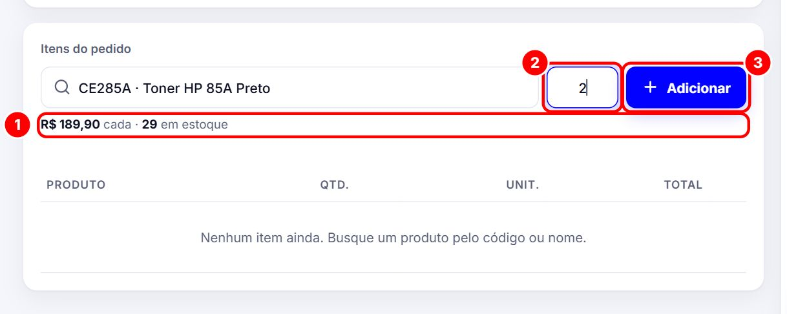
- O produto entra na tabela de itens. Repita os passos 1 a 5 para cada produto.
Se você adicionar de novo um produto que já está no pedido, o sistema soma na mesma linha, em vez de criar outra.
5.4 Mudar a quantidade ou tirar um item
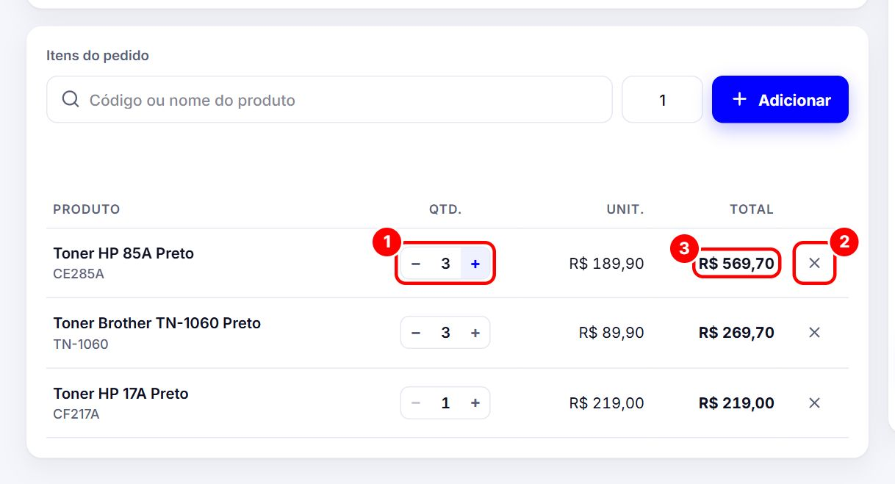
- 1 Clique em + para aumentar uma unidade, ou em − para diminuir uma unidade.
- 2 Clique no X para tirar o produto do pedido.
- 3 O total da linha e o resumo se atualizam na hora.
O preço de cada produto vem do cadastro e não pode ser mudado dentro do pedido. Para dar um preço melhor ao cliente, use o desconto.
5.5 Quando não há estoque suficiente
Se você pedir mais do que existe no estoque, o sistema não deixa adicionar e explica embaixo do campo. Na foto, o cliente queria 5, mas só há 1 1; a mensagem diz “Estoque insuficiente: 1 em estoque.” 2.
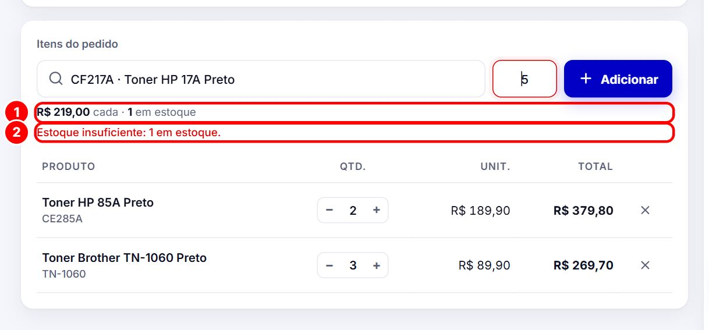
Como resolver: diminua a quantidade para o que existe e clique em + Adicionar, ou combine com o cliente outro produto. Se o produto acabou de chegar e ainda não foi lançado, lance a entrada em Estoque (capítulo 9) e volte ao rascunho.
5.6 Dar desconto
O desconto vale para o pedido inteiro e pode ser em reais ou em porcentagem.
- No Resumo, clique no campo Desconto 1 e digite o valor (por exemplo, 5 ou 12,50).
- Escolha o tipo ao lado 2: R$ (reais) ou % (porcentagem). O tipo escolhido fica azul.
- Confira o novo Total 3. A linha Desconto mostra quanto foi descontado em reais.
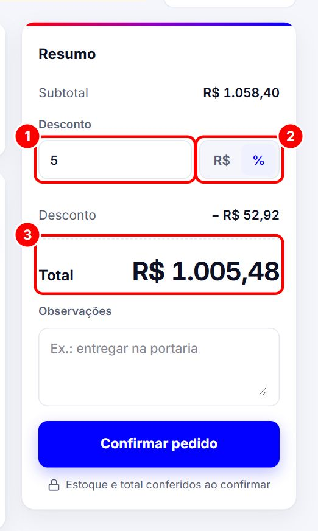
Se o desconto não valer, o campo fica vermelho e o sistema explica embaixo. O total continua sem desconto até você corrigir.
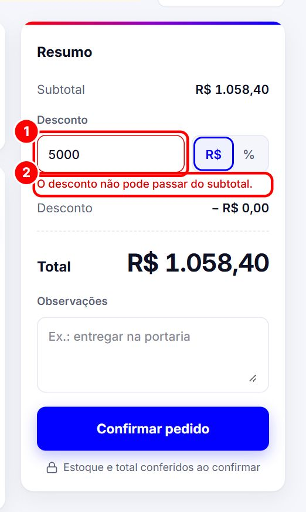
| Mensagem | O que fazer |
|---|---|
| O desconto não pode passar do subtotal. | Em R$, o desconto tem que ser menor ou igual ao subtotal. Confira se não queria escolher %. |
| O desconto não pode passar de 100%. | Em %, use um número de 0 a 100. |
| O desconto não pode ser negativo. | Tire o sinal de menos. |
| Informe um número. Ex.: 10 ou 10,5 | Use só números e vírgula, sem “R$” nem “%”. |
Para tirar o desconto, apague o valor (ou digite 0).
5.7 Observações
No campo Observações do resumo, escreva o que for útil para a entrega ou a cobrança (por exemplo, “Entregar na portaria”). Também é salvo sozinho. As observações aparecem no pedido e no PDF.
5.8 Conferir e confirmar
Assim fica um pedido pronto para confirmar:
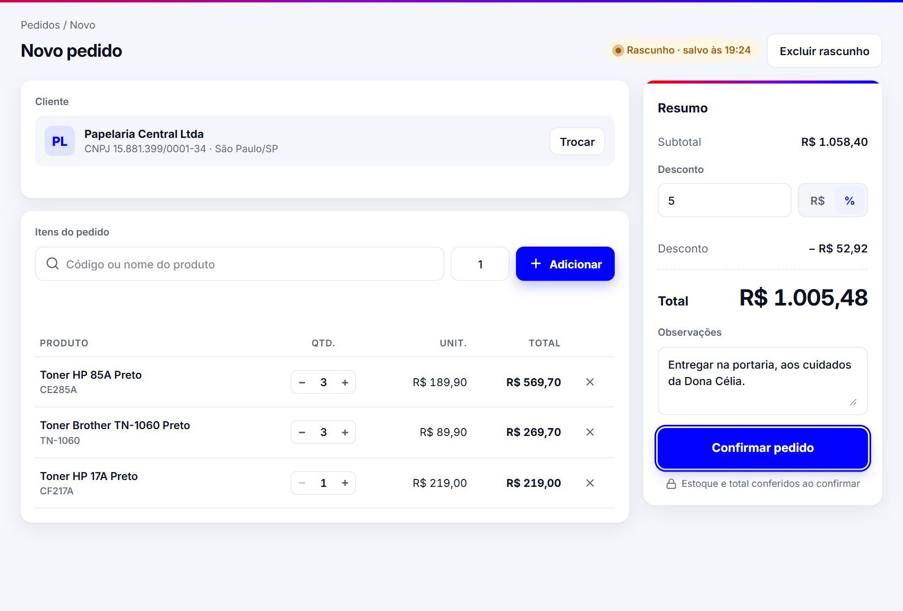
- Confira com atenção: o cliente, cada produto e quantidade, o desconto e o Total.
- Se quiser, escreva as Observações 1.
- Clique em Confirmar pedido 2. Na hora de confirmar, o sistema confere de novo o estoque e o total 3.
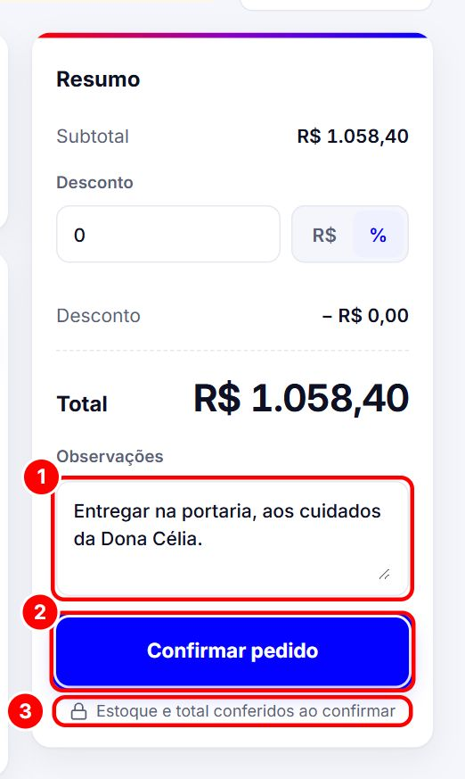
- O pedido recebe o número e abre a tela do pedido, com o aviso “Pedido nº 350 confirmado” 1. O botão PDF 2 gera o documento para o cliente (item 5.12).
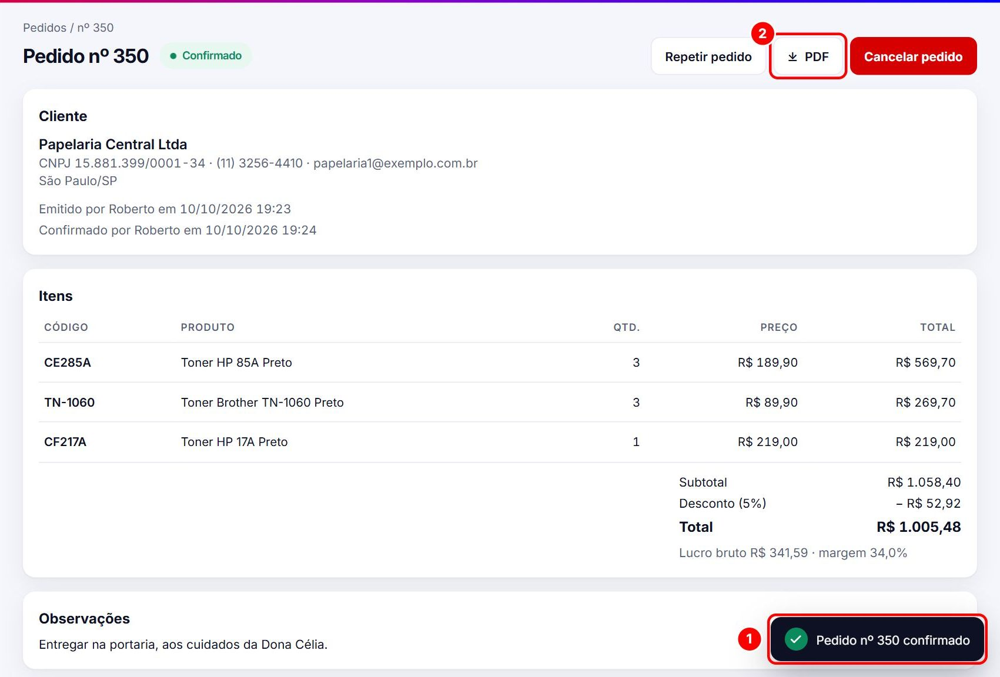
Depois de confirmado, o pedido não pode ser editado nem apagado: o estoque já foi baixado e o número já foi usado. Se algo saiu errado, o Administrador cancela o pedido (capítulo 6) e faz outro.
5.9 Quando o estoque acaba na hora de confirmar
Pode acontecer de outra pessoa vender o mesmo produto enquanto o seu rascunho estava aberto. Nesse caso, ao clicar em Confirmar pedido, nada é gravado e o sistema avisa:
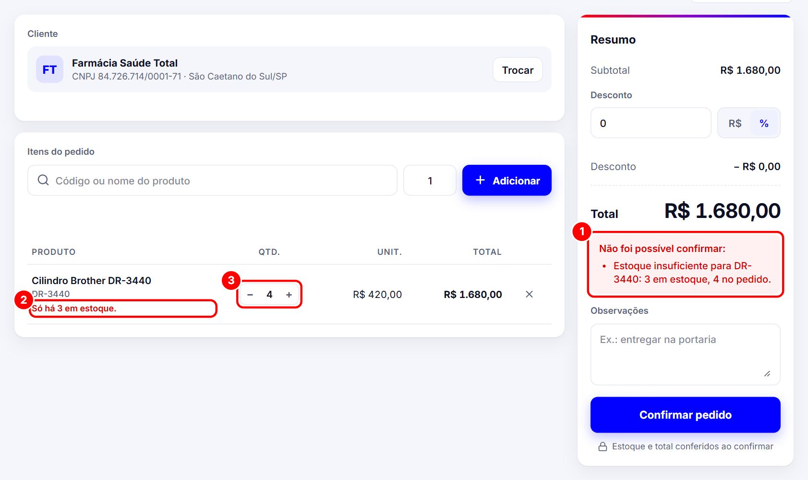
- 1 No resumo: “Não foi possível confirmar: Estoque insuficiente para DR-3440: 3 em estoque, 4 no pedido.”
- 2 Na linha do produto: “Só há 3 em estoque.”
Como resolver: diminua a quantidade com o botão − 3 até caber no estoque (ou tire o produto com o X) e clique de novo em Confirmar pedido.
5.10 Outros avisos ao confirmar
| Aviso | O que aconteceu e o que fazer |
|---|---|
| Escolha o cliente antes de confirmar. | Falta o cliente. Escolha no alto da tela. |
| Adicione pelo menos um produto. | O pedido está sem itens. |
| Os preços de alguns produtos mudaram: … Confira o novo total e confirme de novo. | Alguém mudou o preço de um produto enquanto o rascunho estava aberto. O sistema já atualizou os preços e o total. Confira o novo total e clique de novo em Confirmar pedido. |
| O cliente … foi inativado. Escolha outro cliente. | O cliente foi inativado. Use Trocar ou reative o cliente (capítulo 7). |
| O produto … foi inativado. Remova-o do pedido. | Tire o produto com o X. |
5.11 Rascunhos: parar no meio e continuar depois
Você pode sair do pedido a qualquer momento (clicar em outra tela, fechar o navegador): tudo o que foi feito fica salvo como rascunho. O rascunho não tem número e não mexe no estoque.
- Para continuar, vá à tela Início.
- Em Rascunhos em aberto, clique em Continuar 1 ao lado do pedido.
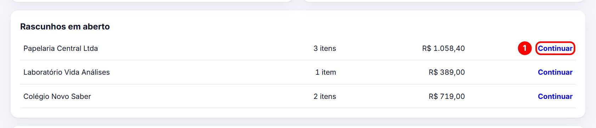
Os rascunhos também aparecem na tela Pedidos com o status Rascunho. Como Administrador, você pode abrir e terminar o rascunho de qualquer pessoa.
Para jogar fora um rascunho: abra o rascunho, clique em Excluir rascunho (no alto, à direita) e, na pergunta “Excluir este rascunho?”, clique em Excluir rascunho 2. Se mudou de ideia, clique em Voltar 1.
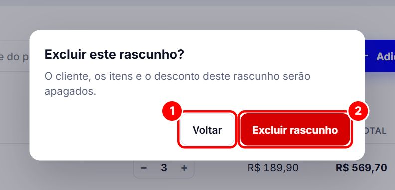
5.12 Gerar o PDF do pedido
- Abra o pedido confirmado (logo depois de confirmar ele já está aberto; ou procure na tela Pedidos).
- Clique em ⤓ PDF, no alto, à direita.
- O navegador baixa o arquivo (por exemplo, pedido-350.pdf) para a pasta Downloads. Abra para imprimir ou para mandar ao cliente por e-mail ou WhatsApp.
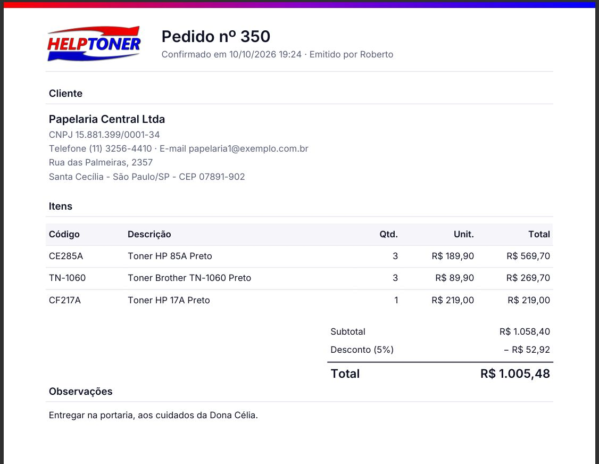
Rascunhos não têm PDF: o PDF só existe depois de confirmar.
CAPÍTULO 6Pedidos: procurar, ver, repetir e cancelar
No menu, Pedidos mostra todos os pedidos da empresa, do mais novo para o mais antigo, 20 por página.
6.1 Procurar um pedido
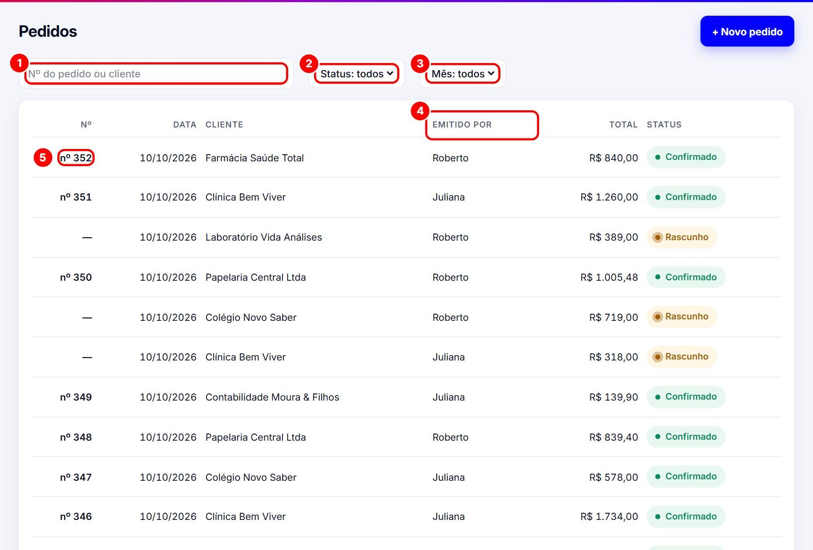
- 1 Busca: digite o número do pedido (por exemplo, 350) ou parte do nome do cliente. A lista muda enquanto você digita.
- 2 Status: mostra só Rascunho, só Confirmado ou só Cancelado.
- 3 Mês: mostra só os pedidos de um mês (os últimos 12 meses).
- 4 Emitido por: quem fez cada pedido.
- 5 Clique no número para abrir o pedido. Rascunhos aparecem com “—” no lugar do número.
Os filtros podem ser usados juntos. Por exemplo, para ver só os cancelados:
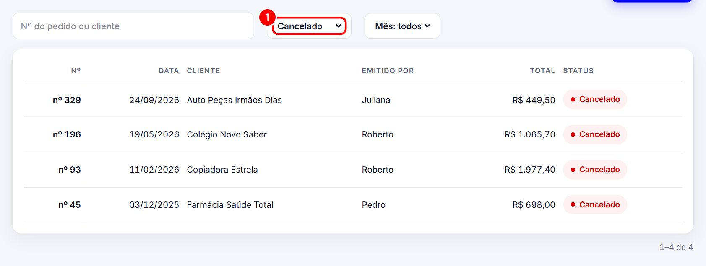
Embaixo da lista, à direita, aparece quantos pedidos foram encontrados (por exemplo, “1–4 de 4”) e, quando há mais de uma página, os botões para ir às outras páginas. Para voltar a ver tudo, volte o filtro para Status: todos e Mês: todos e apague a busca.
6.2 A tela do pedido
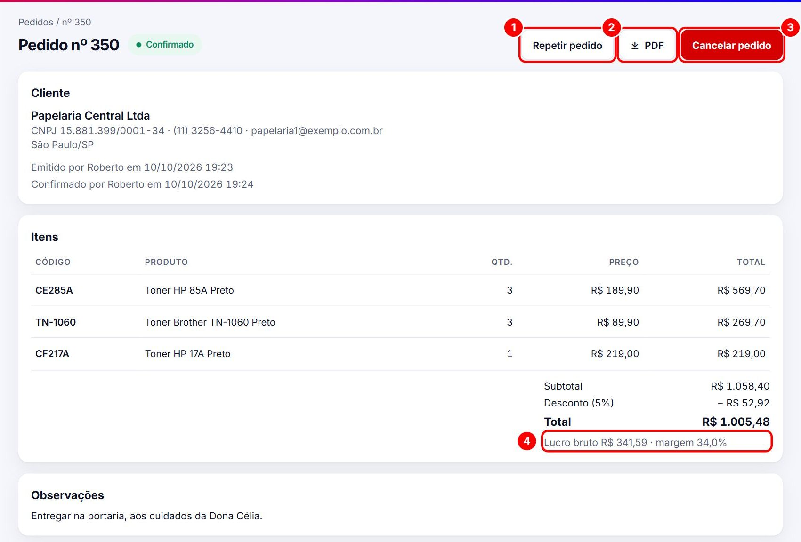
Mostra o cliente, quem emitiu e quando, quem confirmou, os itens, o subtotal, o desconto e o total.
- 1 Repetir pedido: cria um rascunho igual (item 6.3).
- 2 ⤓ PDF: baixa o PDF do pedido.
- 3 Cancelar pedido: só para o Administrador (item 6.4).
- 4 Lucro bruto e margem do pedido: só o Administrador vê. Lucro bruto é o total menos o custo dos produtos; a margem é esse lucro em porcentagem do total.
6.3 Repetir pedido
Útil para o cliente que compra sempre os mesmos toners.
- Abra um pedido confirmado ou cancelado e clique em Repetir pedido.
- O sistema cria um rascunho novo com o mesmo cliente e os mesmos produtos e quantidades, e mostra o aviso “Novo rascunho com os itens do pedido nº …” 1.
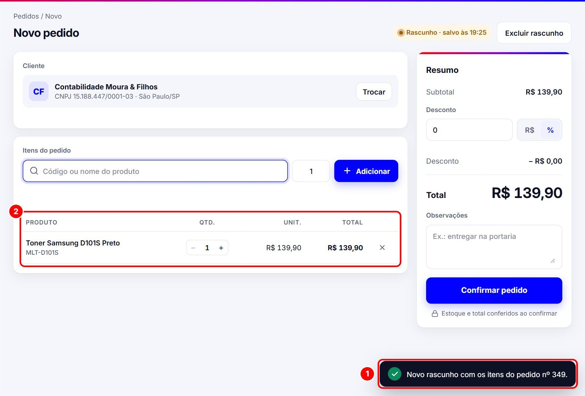
- Confira os itens 2, mude o que precisar e confirme como no capítulo 5.
Os preços são os de hoje, não os do pedido antigo. O desconto e as observações não são copiados: coloque de novo, se for o caso.
Se o cliente do pedido estiver inativo, o sistema não repete e avisa: “O cliente … está inativo. Reative o cliente antes de repetir o pedido.” Reative o cliente em Clientes (item 7.5) e clique de novo em Repetir pedido.
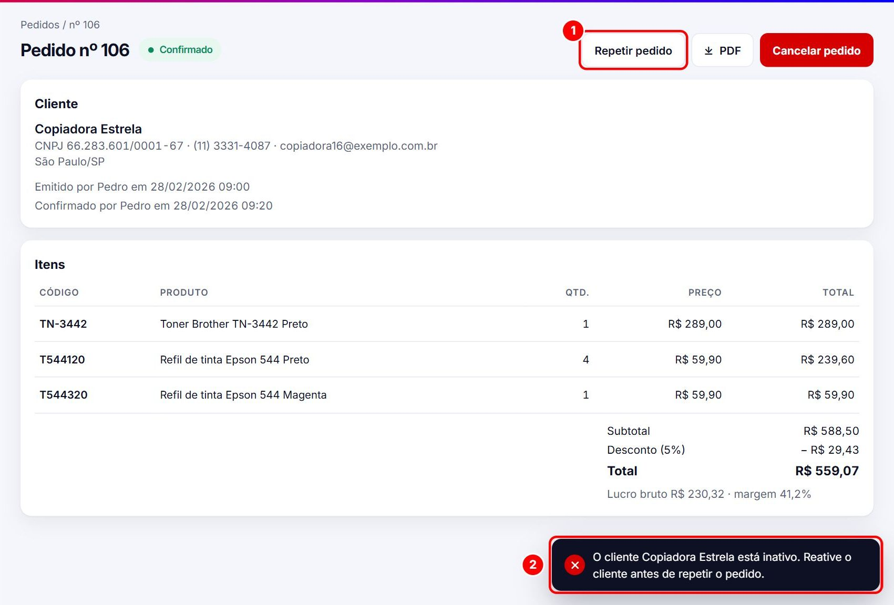
6.4 Cancelar um pedido
Só o Administrador cancela pedidos, e só pedidos confirmados. Ao cancelar, o estoque dos produtos volta sozinho.
- Abra o pedido e clique em Cancelar pedido (botão vermelho).
- Na pergunta “Cancelar pedido nº …?”, escreva o Motivo 1 (por exemplo, “Cliente desistiu da compra”). O motivo é obrigatório.
- Clique em Cancelar pedido 3. Se mudou de ideia, clique em Voltar 2.
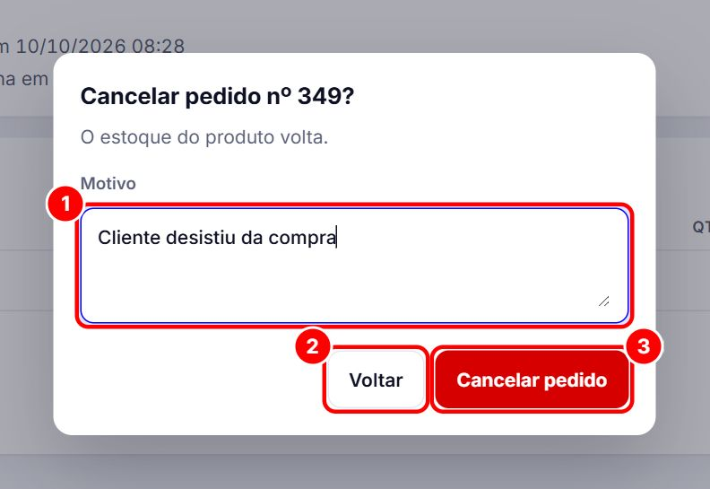
- Aparece o aviso “Pedido nº 349 cancelado. O estoque voltou.” 1. O pedido fica marcado como Cancelado 3, com quem cancelou, quando e o motivo 2.
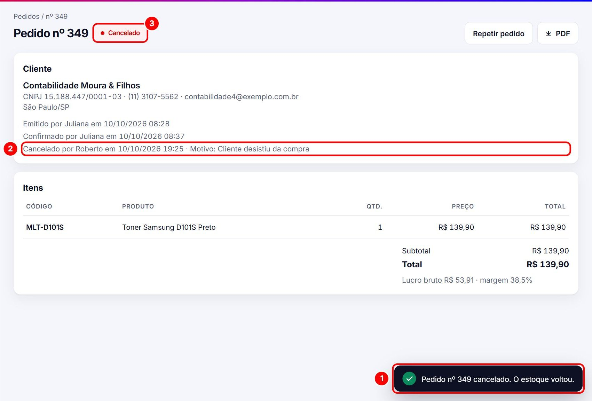
Um pedido cancelado não pode ser “descancelado”. O número continua existindo, marcado como cancelado. Se cancelou por engano, use Repetir pedido e confirme um pedido novo.
CAPÍTULO 7Clientes
No menu, Clientes mostra todos os clientes em ordem alfabética.
7.1 Procurar um cliente
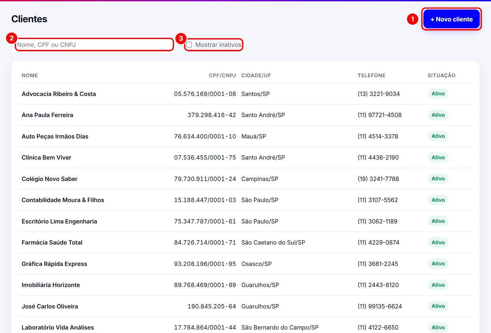
- 1 + Novo cliente: cadastra um cliente (item 7.2).
- 2 Busca: digite parte do nome, do CPF ou do CNPJ. A lista muda enquanto você digita.
- 3 Mostrar inativos: marque para ver também os clientes inativados.
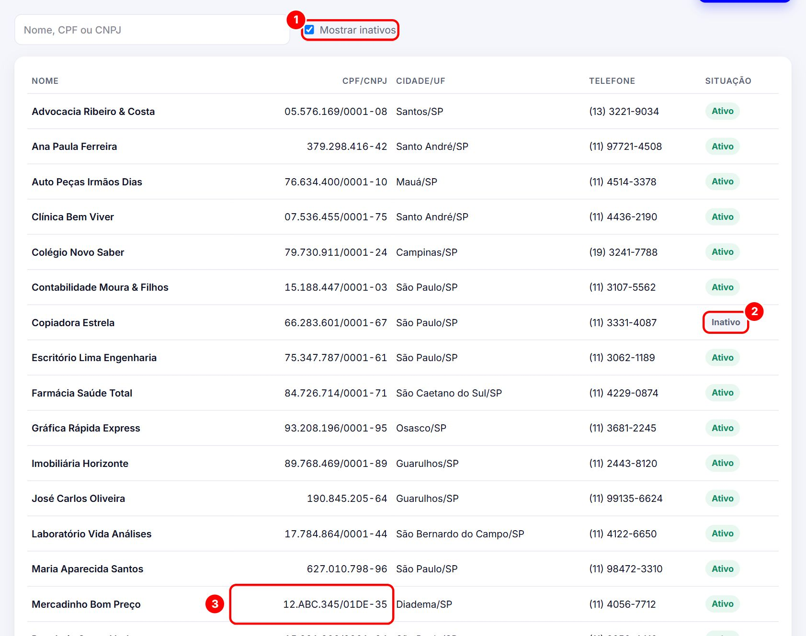
Com Mostrar inativos 1 marcado, os inativos aparecem com a etiqueta cinza Inativo 2. Repare também em 3: é um CNPJ novo, com letras. A Receita Federal começou a dar CNPJs assim, e o sistema já aceita.
7.2 Cadastrar um cliente
- Clique em + Novo cliente.
- Em Tipo 1, escolha Pessoa (pessoa física, com CPF) ou Empresa (com CNPJ).
- Em CPF/CNPJ 2, digite só os números (e as letras, se o CNPJ tiver). Os pontos, a barra e o tracinho aparecem sozinhos.
- Em Nome 3, digite o nome da pessoa ou a razão social da empresa.
- Os outros campos são opcionais, mas ajudam: Telefone, E-mail e o Endereço 4 (CEP, Logradouro, Número, Complemento, Bairro, Cidade e UF) e Observações.
- Clique em Salvar 5. Aparece o aviso “Cliente salvo.” e o sistema volta para a lista.
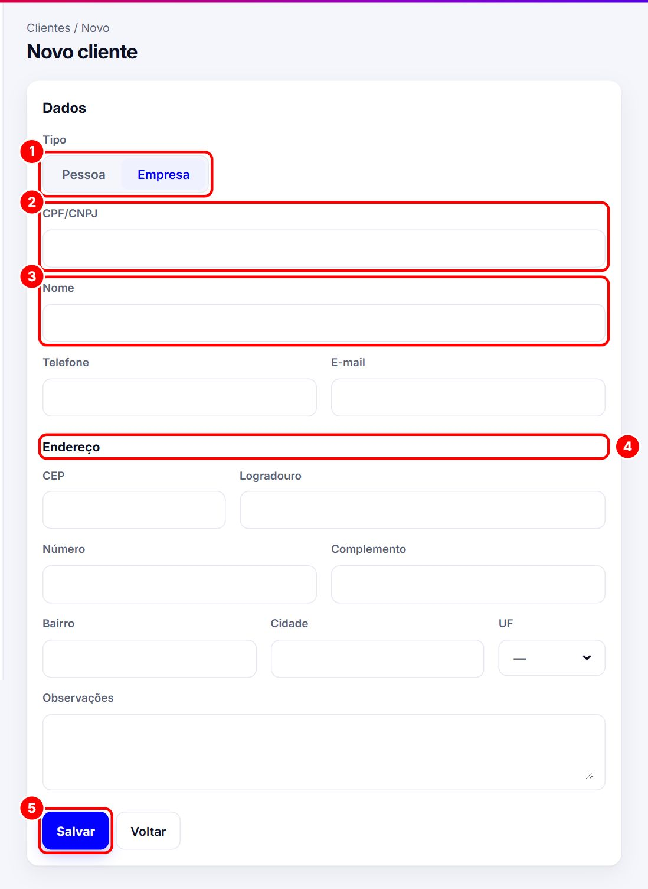
Assim fica o começo do formulário preenchido:
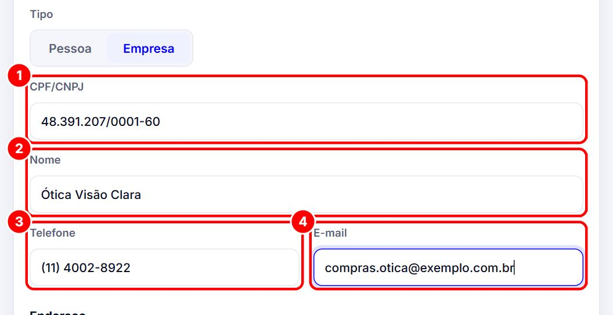
7.3 Se o sistema reclamar
Quando algo está errado, nada é gravado e a explicação aparece em vermelho, embaixo do campo:
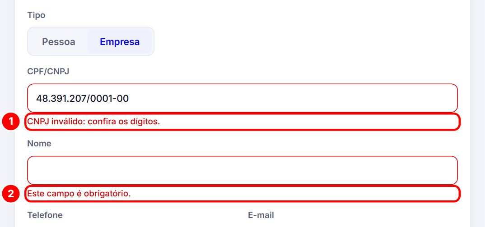
| Mensagem | O que fazer |
|---|---|
| CPF inválido: confira os dígitos. CNPJ inválido: confira os dígitos. | Algum número foi digitado errado. Confira com o documento do cliente. Veja também se o Tipo está certo (Pessoa para CPF, Empresa para CNPJ). |
| Já existe um cliente com este CPF/CNPJ: … | O cliente já está cadastrado (o nome dele aparece na mensagem). Procure-o na lista em vez de cadastrar de novo. |
| Este campo é obrigatório. | Preencha o campo marcado (CPF/CNPJ e Nome são obrigatórios). |
7.4 Mudar os dados de um cliente
- Na lista de clientes, clique no nome do cliente.
- Mude o que precisar e clique em Salvar.
7.5 Inativar e reativar
Clientes nunca são apagados (para não perder os pedidos antigos). Quando um cliente deixa de comprar, ou foi cadastrado por engano, ele é inativado: some da busca de novos pedidos, mas o histórico continua guardado.
- Abra o cliente. No fim da página, no quadro Situação, clique em Inativar 1.
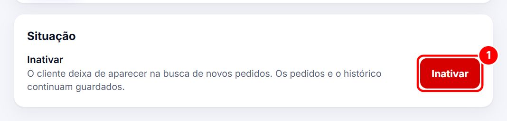
- Na pergunta “Inativar …?”, clique em Inativar 1.
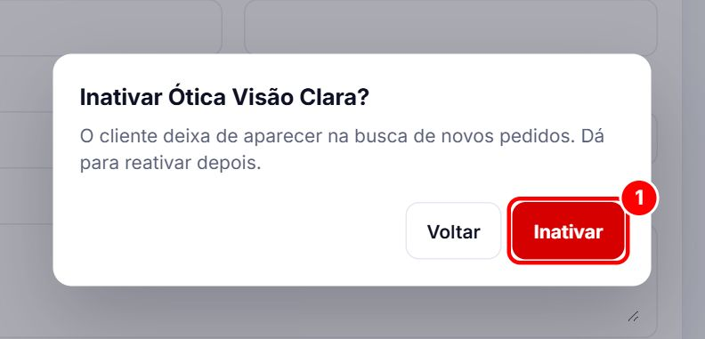
- O cliente ganha a etiqueta Inativo. Para voltar a vender para ele, abra o cliente (com Mostrar inativos marcado na lista) e clique em Reativar 1.
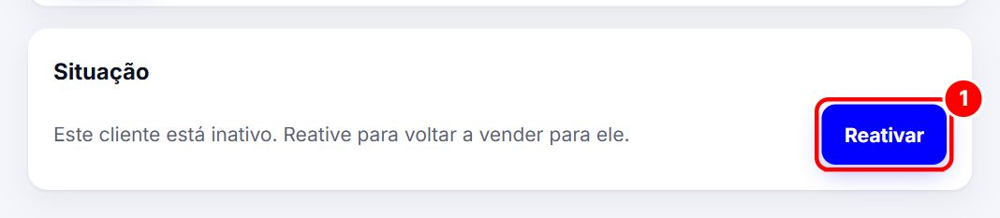
CAPÍTULO 8Produtos
No menu, Produtos mostra os produtos em ordem de código, com preço, custo médio e estoque. Só o Administrador cadastra e muda produtos; o vendedor só consulta.
8.1 A lista de produtos
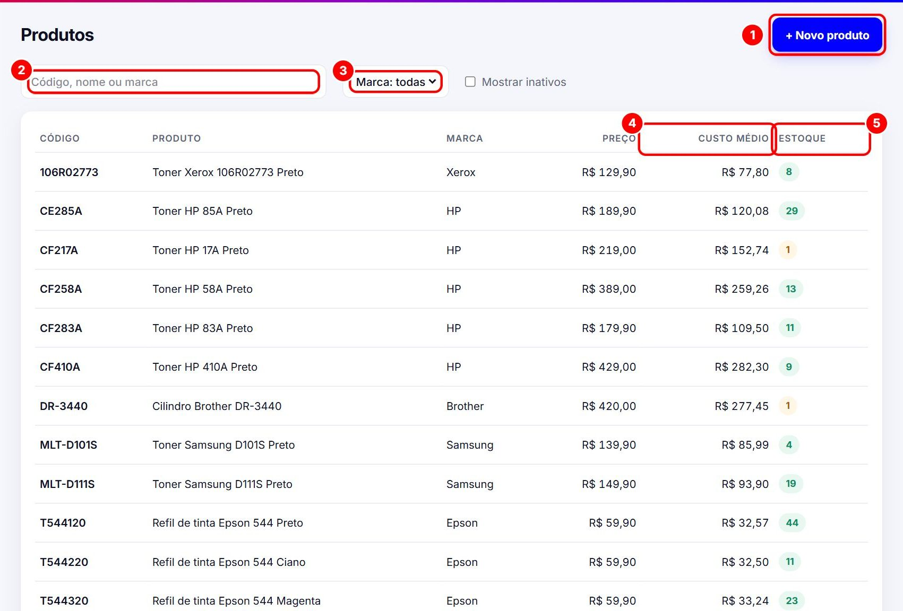
- 1 + Novo produto: cadastra um produto.
- 2 Busca: por código, nome ou marca.
- 3 Marca: mostra só uma marca. Ao lado fica Mostrar inativos.
- 4 Custo médio: quanto, em média, a loja pagou por unidade. Só o Administrador vê esta coluna.
- 5 Estoque: quantas unidades existem agora, numa etiqueta colorida.
As cores do estoque ajudam a ver o que está acabando:
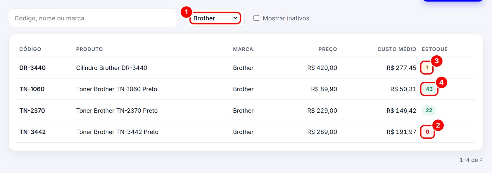
| Cor | Significado |
|---|---|
| Vermelho 2 | Estoque zerado. Não dá para vender. |
| Amarelo 3 | Estoque baixo: 3 unidades ou menos. Hora de comprar. |
| Verde 4 | Estoque normal: 4 ou mais. |
8.2 Cadastrar um produto
- Clique em + Novo produto.
- Preencha Código 1 (o código do fabricante, por exemplo CF226X; pode digitar em letras minúsculas, o sistema passa para maiúsculas), Descrição 2, Marca 3 e Preço (R$) 4, com vírgula nos centavos (por exemplo, 459,90).
- Clique em Salvar 5. Aparece o aviso “Produto salvo.”.
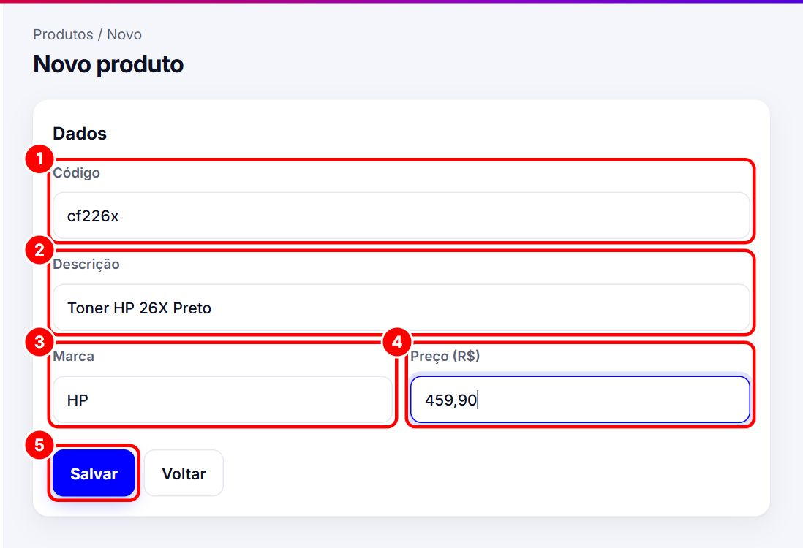
O estoque e o custo não se digitam no cadastro. Depois de salvar, lance o Estoque inicial do produto na tela Estoque (capítulo 9). Sem isso, ele aparece como “Sem estoque” nos pedidos.
Mensagens comuns: “Já existe um produto com este código.” (o produto já está cadastrado) e “Preço inválido: use o formato 189,90.”
8.3 Mudar um produto (por exemplo, o preço)
- Na lista, clique no código do produto.
- Mude o que precisar, como o Preço (R$) 1, e clique em Salvar.
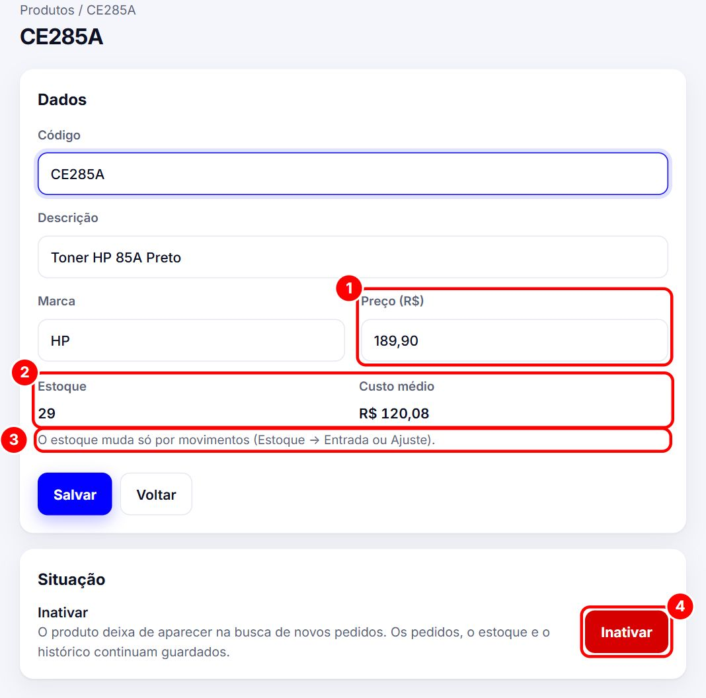
- 2 Estoque e Custo médio só aparecem para leitura: eles mudam sozinhos com os movimentos de estoque 3.
- O preço novo vale para os pedidos novos. Pedidos já confirmados não mudam. Se houver rascunhos abertos com esse produto, o sistema avisa na hora de confirmar e atualiza o preço.
- 4 Inativar: para produtos que a loja deixou de vender. Funciona igual ao cliente (item 7.5): o produto some da busca de novos pedidos, e dá para Reativar depois.
A cada compra, o sistema faz a média do que a loja pagou, levando em conta quantas unidades já havia. Por exemplo: havia 10 toners que custaram R$ 100 cada e chegaram 10 que custaram R$ 120; o custo médio passa a ser R$ 110. É com esse custo que o sistema calcula o lucro dos pedidos e dos relatórios.
CAPÍTULO 9Estoque
O estoque de cada produto só muda por movimentos, e cada movimento fica registrado com data, hora e quem fez. As vendas e os cancelamentos mexem no estoque sozinhos. Você lança à mão só três coisas: Estoque inicial, Entrada e Ajuste.
9.1 O histórico do estoque
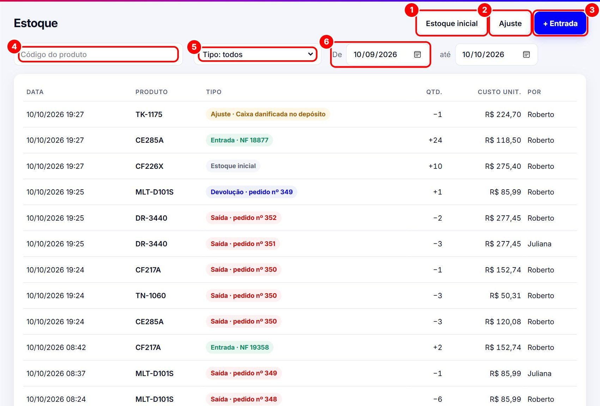
- 1 Estoque inicial, 2 Ajuste e 3 + Entrada: os três lançamentos manuais (veja abaixo).
- 4 Código do produto: mostra só os movimentos de um produto.
- 5 Tipo: Estoque inicial, Entrada, Saída por pedido, Devolução por cancelamento, Ajuste (+) ou Ajuste (−).
- 6 De … até …: o período. Ao abrir, a tela mostra os últimos 30 dias.
Cada linha mostra a data, o produto, o tipo (com a cor), a quantidade (+ entrou, − saiu), o custo unitário (só o Administrador vê) e quem fez. As saídas e devoluções mostram o número do pedido.
9.2 Qual lançamento usar
| Lançamento | Quando usar | O que pede |
|---|---|---|
| Estoque inicial | Uma vez só por produto: quando ele começa a ser controlado no sistema (produto novo, ou a primeira contagem). | Código, quantidade e custo unitário. |
| + Entrada | Sempre que chega mercadoria comprada do fornecedor. | Código, quantidade, custo unitário e observação (o número da nota). |
| Ajuste | Para corrigir: produto quebrado, perdido, com defeito, ou diferença na contagem. | Código, aumentar ou diminuir, quantidade e motivo. |
9.3 Estoque inicial
- Em Estoque, clique em Estoque inicial.
- Em Código do produto 1, comece a digitar e escolha o código na lista que aparece. Só aparecem produtos que ainda não têm nenhum movimento.
- Em Quantidade 2, digite quantas unidades existem.
- Em Custo unitário 3, digite quanto a loja pagou por unidade (por exemplo, 275,40).
- Clique em Registrar 4. Aparece o aviso “Estoque inicial registrado: CF226X, 10 un.”.
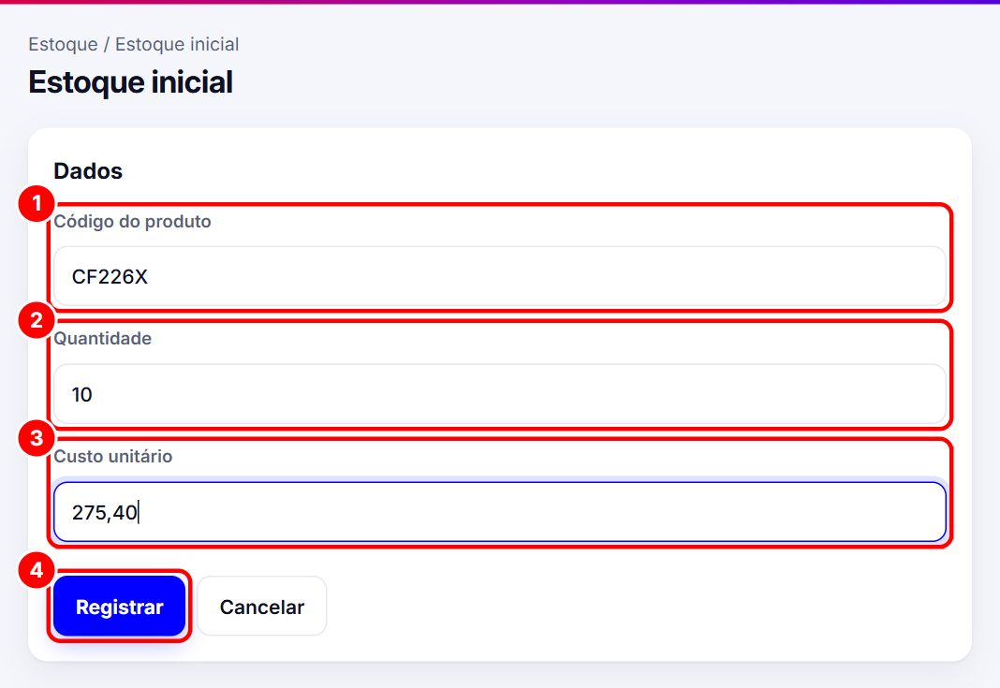
Se o produto já tiver movimentos, o sistema responde “Este produto já tem movimentos. Use Entrada.”
9.4 Entrada (compra do fornecedor)
- Em Estoque, clique em + Entrada.
- Preencha Código do produto 1, Quantidade 2 e Custo unitário 3 (o preço de compra de uma unidade, como está na nota).
- Em Observação 4, escreva o número da nota fiscal (por exemplo, NF 18877). É obrigatório.
- Clique em Registrar 5. Aparece o aviso “Entrada registrada: CE285A, 24 un.” e o custo médio do produto é recalculado.
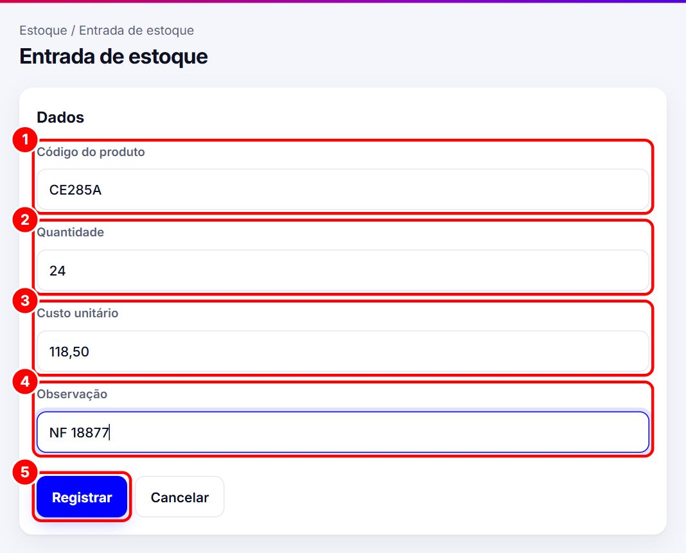
Se a nota diz 24 toners por R$ 2.844,00, o custo unitário é R$ 2.844,00 ÷ 24 = 118,50. Um custo errado deixa o lucro dos relatórios errado.
9.5 Ajuste
- Em Estoque, clique em Ajuste.
- Preencha Código do produto 1.
- Em Sentido 2, escolha Diminuir (−) (quebrou, perdeu, defeito, a contagem deu menos) ou Aumentar (+) (a contagem deu mais).
- Digite a Quantidade 3 e o Motivo 4 (por exemplo, “Caixa danificada no depósito”). Clique em Registrar 5.
- O sistema mostra, num quadro amarelo, um resumo para você conferir 1, por exemplo “Confirme o ajuste: −1 em TK-1175 (motivo: …)”. Se estiver certo, clique em Registrar 2; se não, em Voltar 3.
O ajuste não muda o custo médio. O estoque nunca fica negativo (“o ajuste deixaria o estoque negativo”). Só dá para aumentar um produto que já teve estoque inicial ou entrada (“Este produto ainda não tem custo…”).
9.6 Conferir o estoque de um produto
Para ver tudo o que aconteceu com um produto, digite o código no filtro Código do produto 1 e ajuste as datas, se precisar:
CAPÍTULO 10Relatórios
No menu, Relatórios mostra como vão as vendas, o lucro, os clientes e o estoque. Só o Administrador vê esta tela. Os relatórios contam só pedidos confirmados; os cancelados têm uma aba própria.
10.1 Os filtros
Os filtros ficam numa linha no alto e valem para a aba que estiver aberta. Ao mudar um filtro, os números se atualizam sozinhos.
- 1 Abas: Resumo, Vendas por período, Clientes, Produtos e marcas, Funcionários, Estoque e Cancelamentos.
- 2 Período: Últimos 3 meses, 2026 até agora, Últimos 12 meses ou Escolher datas…. Os atalhos começam no dia 1º de um mês e vão até hoje, contando o mês atual. Embaixo dos filtros aparece o período exato (por exemplo, “De 01/11/2025 a 10/10/2026”).
- 3 Agrupar por: Dia, Semana ou Mês. Muda como os números são somados no gráfico e na aba Vendas por período. Para agrupar por dia, o período pode ter até 366 dias.
- 4 Funcionário: Todos ou só os pedidos de uma pessoa.
- 5 ⤓ Excel e ⤓ PDF: baixam o relatório (item 10.5).
Com Escolher datas… 1, aparecem os campos De e até 2. Clique em cada um e escolha o dia no calendário.
10.2 A aba Resumo
Responde à pergunta: “Como estão as vendas?” No alto ficam cinco números do período:
- Faturamento líquido 1: quanto foi vendido, já descontados os descontos.
- Lucro bruto: faturamento menos o custo dos produtos vendidos.
- Margem bruta: o lucro em porcentagem do faturamento.
- Pedidos confirmados e Valor médio por pedido.
Embaixo de cada número 2, a comparação com o período anterior do mesmo tamanho: ▲ subiu em verde, ▼ caiu em vermelho. “p.p.” quer dizer pontos percentuais (por exemplo, a margem foi de 38,5% para 36,0%: caiu 2,5 p.p.).
O gráfico e a caixa de valores
O gráfico mostra o faturamento líquido (linha azul) e o lucro bruto (linha laranja) em cada mês, semana ou dia. As cores estão explicadas na legenda 2.
- Passe o mouse por cima do gráfico, sem clicar. Aparece uma linha vertical e uma caixa de valores 1 com o mês, o faturamento, o lucro, a margem e o número de pedidos daquele ponto.
- Mova o mouse para os lados para ver os outros meses. Também dá para clicar no gráfico e usar as setas ← e → do teclado.
- Prefere ver os números em lista? Clique em Tabela 3. Para voltar, clique em Gráfico.
Mais embaixo ficam os Produtos que mais faturaram (passe o mouse nas barras para ver o lucro e a margem de cada um) e os Clientes sem comprar há mais de 60 dias (só os clientes ativos), bons candidatos para oferecer toner de novo. O botão Repetir pedido cria na hora um rascunho com a última compra do cliente.
10.3 As outras abas
Para abrir uma aba, clique no nome dela. Os filtros continuam valendo.
Vendas por período
Responde: “Quanto vendemos em cada mês (ou semana, ou dia)?” Para cada período: pedidos, valor bruto, descontos, líquido, lucro, margem e valor médio.
Clientes
Responde: “Quem são os melhores clientes e quem sumiu?” O Ranking de clientes ordena pelo valor comprado, com o número de pedidos, o lucro e a data do último pedido. Embaixo, os clientes sem comprar: escolha quantos dias em Sem comprar há mais de … dias 2. Clientes inativos não entram nesta lista.
Produtos e marcas
Responde: “O que mais vende e o que dá mais lucro?” Por produto e por marca: quantidade vendida, faturamento, lucro, margem e participação no total.
Funcionários
Responde: “Quanto cada um vendeu?” Pedidos, valor, lucro e o desconto médio que cada pessoa deu. Quem foi desativado aparece com “(inativo)” depois do nome.
Estoque
Responde: “Quanto dinheiro está parado no estoque e o que acabou?” Estoque atual de cada produto com o custo médio e o valor em estoque, o valor total, os produtos zerados e o total de entradas, saídas e ajustes do período.
Cancelamentos
Responde: “O que foi cancelado, por quê e por quem?” Número do pedido, cliente, valor, motivo, quem cancelou, a data e quem tinha emitido.
10.4 Ver só uma pessoa ou outro período
Escolha o funcionário em Funcionário, ou mude o Período, e a aba se atualiza. Para voltar ao normal, escolha Todos e Últimos 12 meses (ou o atalho que preferir).
10.5 Baixar em Excel ou PDF
- Abra a aba que quer baixar e acerte os filtros.
- Clique em ⤓ Excel (planilha, para fazer contas) ou ⤓ PDF (para ler ou imprimir), no canto direito dos filtros.
- O arquivo vai para a pasta Downloads, com o nome da aba e o período, por exemplo relatorio-resumo-2025-11-01-a-2026-10-10.pdf.
O arquivo sai com os mesmos filtros da tela.
CAPÍTULO 11Funcionários
No menu, Funcionários é onde o Administrador cadastra quem usa o sistema, troca senhas esquecidas e cuida de celulares perdidos. Não existe cadastro pela internet: toda pessoa nova entra por aqui.
11.1 Vendedor ou Administrador?
| O que a pessoa pode fazer | Vendedor | Administrador |
|---|---|---|
| Cadastrar e mudar clientes | Sim | Sim |
| Fazer, confirmar e repetir pedidos | Sim | Sim |
| Ver todos os pedidos e gerar o PDF | Sim | Sim |
| Consultar produtos e estoque (sem ver custos) | Sim | Sim |
| Cadastrar produtos e mudar preços | Não | Sim |
| Lançar estoque inicial, entrada e ajuste | Não | Sim |
| Cancelar pedidos | Não | Sim |
| Ver custo, lucro e margem | Não | Sim |
| Relatórios | Não | Sim |
| Funcionários e Histórico | Não | Sim |
Ao lado, o menu de uma vendedora: só aparecem Início, Pedidos, Clientes, Produtos e Estoque 1. Na tela de pedidos, ela também não vê o botão Cancelar pedido nem o lucro.
Na dúvida, cadastre como Vendedor. Dá para mudar o perfil depois.
11.2 A lista de funcionários
- 1 + Novo funcionário: cadastra uma pessoa.
- 2 Perfil: Administrador (vermelho) ou Vendedor (azul).
- 3 2FA (verificação em duas etapas): Ativo quando a pessoa já ligou o aplicativo do celular; Pendente quando ainda não fez o primeiro acesso.
- 4 Situação: Ativo ou Desativado.
11.3 Cadastrar um funcionário
- Clique em + Novo funcionário.
- Preencha Nome 1 e E-mail 2 (o e-mail é o que a pessoa vai usar para entrar) e escolha o Perfil 3.
- Clique em Criar funcionário 4.
- O sistema mostra a senha temporária 1 da pessoa. Ela aparece uma vez só 2: anote ou passe agora.
- Clique em Voltar para Funcionários 3.
Passe pessoalmente ou por ligação, soletrando. A senha tem só letras minúsculas e números, em quatro grupos de quatro separados por tracinhos (por exemplo, w3gb-2jrz-mvd3-vtce), e não usa letras que se confundem com números, como “o” e “0”. Os tracinhos fazem parte dela. Não mande em grupo de WhatsApp nem deixe anotada à vista. No primeiro acesso, a pessoa troca a senha e liga o aplicativo do celular, como no capítulo 2.
Se a senha se perder antes do primeiro acesso, use Redefinir senha (item 11.5) para gerar outra.
Se o e-mail já estiver em uso, o sistema avisa: “Já existe um funcionário com este e-mail.”
11.4 A tela do funcionário
Na lista, clique no nome da pessoa. Em Dados, dá para mudar o nome e o Perfil 1 e clicar em Salvar. O e-mail não muda por aqui. Você não pode mudar o seu próprio perfil.
No quadro Acesso ficam as três ações: 2 Redefinir senha, 3 Zerar 2FA e 4 Desativar. Todas pedem confirmação antes.
11.5 Redefinir senha (a pessoa esqueceu a senha)
- Abra o funcionário e clique em Redefinir senha.
- Na pergunta, clique em Redefinir senha 1.
- Aparece a tela Senha redefinida, com uma senha temporária nova 1. Passe para a pessoa do mesmo jeito seguro do item 11.3.
A pessoa sai do sistema na hora (em todos os aparelhos) e, no próximo acesso, entra com a senha temporária e cria uma nova. O aplicativo do celular dela continua valendo.
11.6 Zerar 2FA (celular perdido, trocado ou quebrado)
- Abra o funcionário e clique em Zerar 2FA.
- Leia a pergunta e clique em Zerar 2FA 1.
- Aparece o aviso “Verificação em duas etapas zerada.”. O aplicativo antigo e os códigos de recuperação da pessoa deixam de valer, e ela sai do sistema na hora.
- No próximo acesso, a pessoa entra com e-mail e senha e liga o aplicativo no celular novo (etapas 2 e 3 do capítulo 2).
Use Zerar 2FA e também Redefinir senha. A senha pode estar salva no navegador do celular perdido; com a senha nova, quem estiver com o aparelho não entra mais. Depois, passe a senha temporária nova para a pessoa.
Se quem perdeu o celular foi você, peça ao Lucas (o outro Administrador) para fazer isso na sua conta. Os dois administradores cobrem um ao outro.
11.7 Desativar (a pessoa saiu da empresa)
- Abra o funcionário e clique em Desativar (botão vermelho).
- Na pergunta, clique em Desativar 1.
A pessoa perde o acesso na hora. Os pedidos e o histórico dela continuam guardados e aparecem nos relatórios. Ninguém consegue desativar a si mesmo. Para reativar alguém desativado por engano, fale com o Lucas: isso é feito na parte técnica.
CAPÍTULO 12Histórico de alterações
No menu, Histórico responde: “Quem mudou o quê, e quando?” Registra os cadastros e mudanças de clientes, produtos e funcionários e todas as entradas no sistema, inclusive as que deram errado. Só o Administrador vê.
- 1 Tipo: Tudo, Clientes, Produtos, Funcionários ou Logins (entradas no sistema).
- 2 De … até …: o período. Ao abrir, mostra os últimos 30 dias.
- 3 Cada linha diz quando, quem fez e o quê. Nas mudanças de cadastro, aparece o valor antigo e o novo (por exemplo, a mudança de um preço).
As entradas no sistema
Com o tipo Logins 1, aparecem só as entradas: Login em verde (deu certo, com o navegador usado, como “Edge no Windows”) e Login recusado em vermelho 2, com o e-mail tentado e o motivo (senha errada, código errado, bloqueio por excesso de tentativas, acesso desativado).
Muitas entradas recusadas seguidas para o mesmo e-mail podem ser alguém tentando adivinhar a senha. Se você vir isso para um e-mail da empresa, avise o Lucas. Os pedidos e o estoque têm o histórico próprio: veja a tela do pedido e a tela Estoque.
CAPÍTULO 13Minha conta
Embaixo do menu, Minha conta mostra os seus dados e deixa trocar a sua senha e gerar novos códigos de recuperação.
13.1 Trocar a sua senha
- Em Minha conta, clique em Trocar senha 1.
- Digite a Senha atual 1, a Nova senha 2 e repita em Confirme a nova senha 3. As regras são as mesmas do primeiro acesso (capítulo 2).
- Clique em Salvar nova senha 4. O sistema volta para Minha conta.
Depois de trocar a senha, o próximo login pede de novo o código do celular, mesmo num computador de confiança.
13.2 Gerar novos códigos de recuperação
Faça isso quando usar vários códigos, perder o papel ou achar que alguém viu os códigos.
- Em Minha conta, clique em Gerar novos códigos de recuperação 2.
- Se você entrou há mais de alguns minutos, o sistema pede Confirme que é você: digite a sua Senha 1 e clique em Confirmar 2. (Se preferir, clique em Prefiro usar o código do aplicativo.)
- Na tela Gerar novos códigos de recuperação, clique em Gerar novos códigos 1.
- Aparecem 10 códigos novos 1. Anote no papel (ou clique em Baixar 2), guarde como no capítulo 2 e clique em Voltar para Minha conta.
Assim que você gera os novos, os do papel antigo não funcionam mais. Jogue o papel antigo fora (rasgado) e guarde o novo.
Para mudar o seu nome, e-mail ou perfil, fale com o outro Administrador (o Lucas).
CAPÍTULO 14Usar no celular
O sistema também funciona no navegador do celular (Chrome no Android, Safari no iPhone), com o mesmo endereço, o mesmo e-mail e a mesma senha. As telas se ajeitam ao tamanho do celular.
O menu fica escondido no botão 1.
Tocando nele, o menu abre.
- O menu fica no botão de três tracinhos, no canto de cima à esquerda 1. Toque nele para abrir e escolha a tela. Toque de novo para fechar.
- As tabelas viram cartões: cada pedido, cliente ou produto aparece num cartão, um embaixo do outro. Role a tela com o dedo.
- No pedido, o total e o botão Confirmar ficam numa barra fixa embaixo da tela 1, sempre à vista.
Pedidos em cartões.
Barra com o total e o botão Confirmar.
No celular, o aplicativo autenticador e o sistema ficam no mesmo aparelho: abra o autenticador, veja o número, volte ao navegador e digite. No celular, escolha Confiar neste computador só se o celular for seu e tiver senha de bloqueio.
CAPÍTULO 15Deu problema, e agora?
Respostas curtas para as situações mais comuns. Se nada resolver, fale com o Lucas (capítulo 16).
Esqueci a minha senha
Na tela Entrar não existe “esqueci a senha”. Peça ao Lucas (ou ao outro Administrador) para usar Redefinir senha na sua conta (capítulo 11). Ele passa uma senha temporária, e você cria uma nova ao entrar.
Perdi o celular (ou troquei de celular)
Para entrar agora, use um código de recuperação do papel (item 3.3). Depois, peça ao Lucas para fazer Zerar 2FA e Redefinir senha na sua conta, e ligue o aplicativo no celular novo (capítulo 2). Celular trocado, mas com o antigo em mãos? Basta o Zerar 2FA.
O código do celular não é aceito (“Código incorreto.”)
Confira se o celular está com data e hora automáticas. Digite o número que está aparecendo agora e, se o relógio do aplicativo estiver quase acabando, espere o próximo. Confira se está olhando a conta Helptoner Pedidos no aplicativo. Cada número só vale uma vez.
“E-mail ou senha incorretos.”
Confira o e-mail (sem espaço no fim) e a senha: veja se o Caps Lock (letra maiúscula) não está ligado. Depois de algumas tentativas erradas, o sistema bloqueia por um tempo (veja a próxima pergunta).
“Muitas tentativas erradas… bloqueado por alguns minutos”
É uma proteção: depois de várias tentativas erradas seguidas, o sistema bloqueia aquele e-mail por uns minutos, para ninguém ficar tentando adivinhar a senha. Espere uns 5 minutos e tente de novo com calma. Se não lembrar a senha, peça para redefinir. A tela “Muitas tentativas” pede para esperar um minuto.
Apareceu a tela Entrar no meio do trabalho
A sessão expirou: o sistema sai sozinho depois de 2 horas sem uso. Entre de novo; ele volta para a tela em que você estava. Rascunhos de pedido não se perdem.
Se aparecer “Sua sessão foi renovada. Recarregue a página e tente de novo.”, aperte F5 (ou o botão de recarregar do navegador) e repita o que estava fazendo.
“Acesso negado”
A tela que você tentou abrir não é do seu perfil (por exemplo, um vendedor abrindo Relatórios). Clique em Voltar ao início. Se você acha que deveria ter acesso, fale com o Lucas.
“Página não encontrada”
O endereço está errado ou é de algo que não existe mais (por exemplo, um link antigo). Clique em Voltar ao início e chegue à tela pelo menu.
“Algo deu errado”
Foi um erro do sistema, não seu. Espere um pouco e tente de novo. Se continuar, anote o Código de referência que aparece na tela e passe para o Lucas, junto com o que você estava fazendo: com esse código ele acha o problema.
Apareceu “Não foi possível concluir. Tente de novo.”
A internet pode ter caído por um instante. Confira a conexão e repita o último clique. O mesmo vale para “Não foi possível gerar o PDF” ou “Não foi possível gerar o arquivo”.
O estoque de um produto parece errado
Abra Estoque, digite o código no filtro Código do produto e aumente o período em De. Ali aparece cada entrada, venda, cancelamento e ajuste, com quem fez (item 9.6). Se a contagem física for diferente, corrija com um Ajuste e escreva o motivo.
Não acho um cliente ou produto na hora do pedido
Ele pode estar inativo ou não estar cadastrado. Procure em Clientes ou Produtos com Mostrar inativos marcado, e reative ou cadastre.
CAPÍTULO 16Contatos
Em caso de dúvida, fale com o Lucas.
Telefone / WhatsApp:
E-mail:
Para anotar
| Endereço do sistema | |
| Meu e-mail de entrada | |
| Onde guardei os códigos de recuperação | |
| Data em que gerei os códigos atuais |
Não anote aqui a sua senha nem os códigos de recuperação. Este manual pode ficar à vista de outras pessoas.